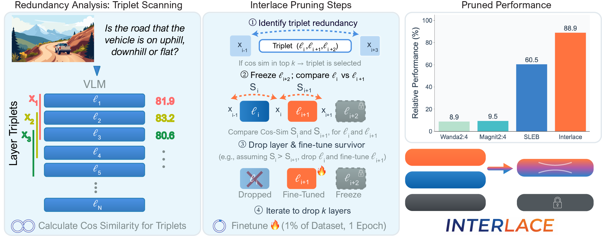

We introduce INTERLACE, a novel framework that prunes redundant layers in Vision-Language Models (VLMs) while maintaining performance through sample-efficient finetuning. Existing layer pruning methods lead to significant performance drop when applied to VLMs. Instead, we analyze triplets of consecutive layers to identify local redundancy, removing the most redundant of the first two layers, finetuning the remaining layer to compensate for the lost capacity, and freezing the third layer to serve as a stable anchor during finetuning.
By finetuning only a subset of layers on just 1% of the FineVision dataset for one epoch, INTERLACE achieves 88.9% average performance retention after dropping 25% of the network, outperforming alternative pruning methods by 28.4%.

Figure 1. Interlace identifies local redundancy by calculating cosine similarity for triplets of layers. In each selected triplet, the most redundant of the first two layers is dropped (red), the other is fine-tuned (cyan), and the third is frozen as a stable anchor (blue). The performance comparison (top right) shows that Interlace outperforms alternative pruning methods by 28.4%.
Compute cosine similarity across triplets of consecutive layers to identify locally redundant regions in the network.
Within each selected triplet: drop the most redundant layer, fine-tune the other, and freeze the third as a stable anchor.
Train only the selected layers on 1% of FineVision for a single epoch using standard cross-entropy loss with DeepSpeed ZeRO-3.
| Method | Sparsity | Fine-Tune | TTFT Speedup | Text/Chart | GVQA | Perception | Inst&Sci | Avg | Rel. Perf. |
|---|---|---|---|---|---|---|---|---|---|
| Dense | 0% | – | 1.00x | 79.3 | 79.1 | 76.5 | 74.9 | 77.8 | 97.1% |
| Dense-FT | 0% | ✓ | 1.00x | 83.2 | 80.2 | 75.8 | 82.4 | 80.5 | 100.0% |
| Wanda 2:4 | 50% | – | 0.97x | 6.1 | 7.8 | 5.7 | 10.7 | 7.2 | 8.9% |
| Magnitude 2:4 | 50% | – | 0.97x | 6.2 | 7.6 | 7.9 | 10.6 | 7.7 | 9.5% |
| SLEB | 25% | – | 1.12x | 43.4 | 54.1 | 48.4 | 51.3 | 48.6 | 60.5% |
| SLEB-FT | 25% | ✓ | 1.12x | 50.5 | 43.8 | 41.4 | 47.4 | 46.0 | 57.1% |
| INTERLACE (Ours) | 25% | ✓ | 1.18x | 74.5 | 73.6 | 64.9 | 72.8 | 71.6 | 88.9% |
| Model | 10% Drop | 15% Drop | 20% Drop | 25% Drop |
|---|---|---|---|---|
| Qwen3-VL-8B | 94.0% | 92.1% | 86.9% | 86.1% |
| Qwen3-VL-4B | 93.9% | 91.9% | 88.0% | 81.7% |
| Method | Text/Chart | GVQA | Perception | Inst&Sci | Avg |
|---|---|---|---|---|---|
| Consecutive | 76.6 | 55.9 | 54.8 | 71.4 | 65.1 |
| Random | 87.9 | 86.9 | 77.5 | 87.9 | 85.1 |
| Interlace-OA | 95.8 | 96.2 | 89.6 | 98.9 | 94.9 |
| Interlace-TN | 99.4 | 97.3 | 99.3 | 98.3 | 98.7 |
All pruned models are available on HuggingFace for direct inference: